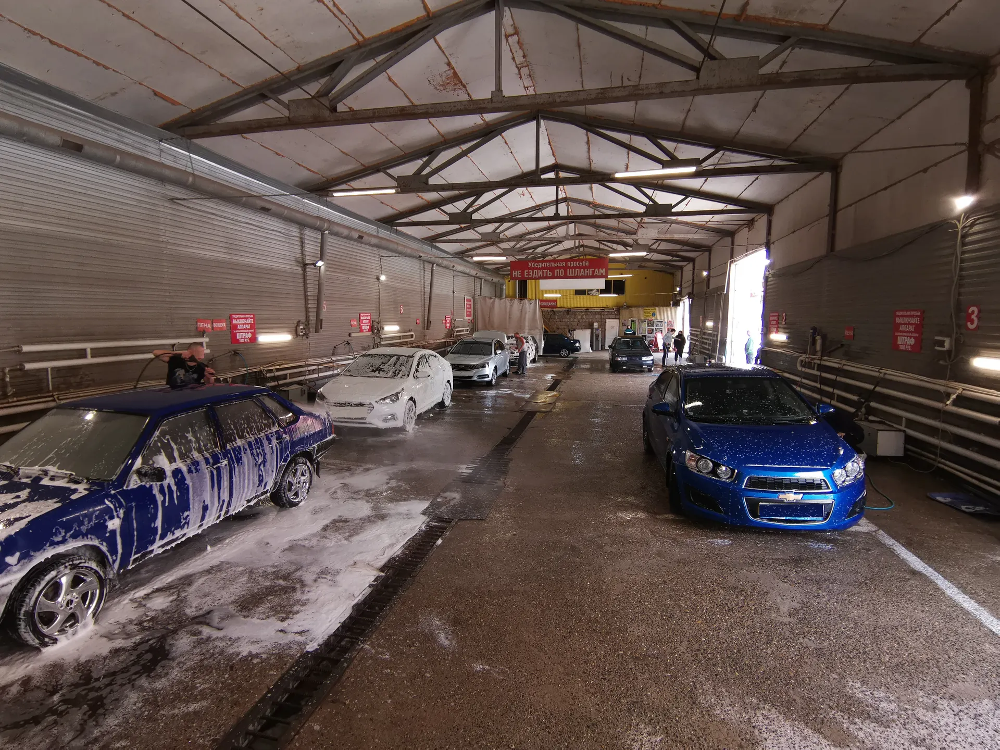
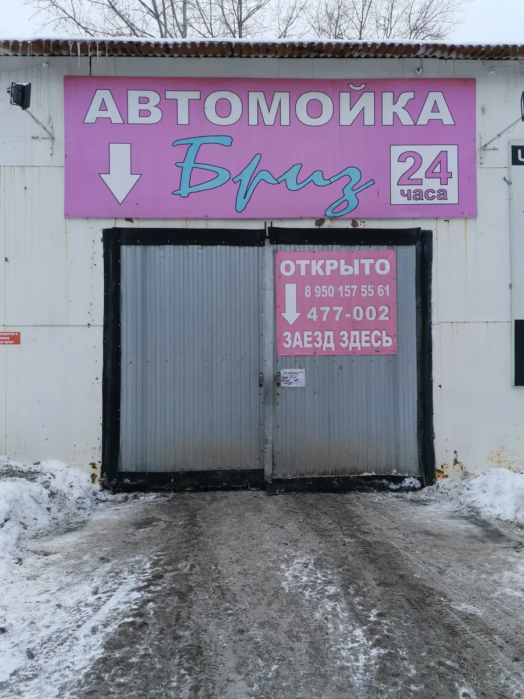
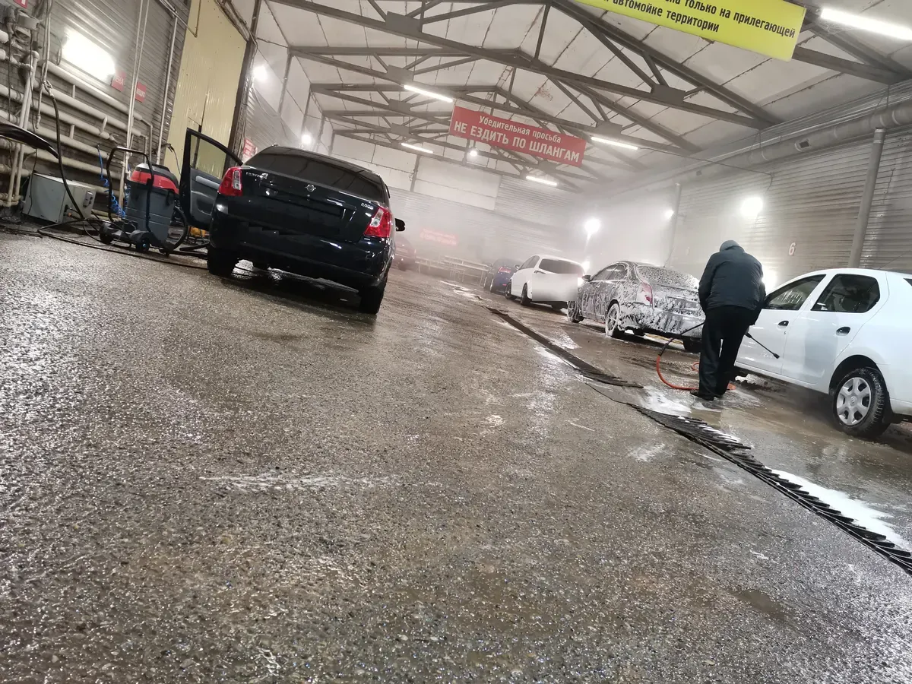
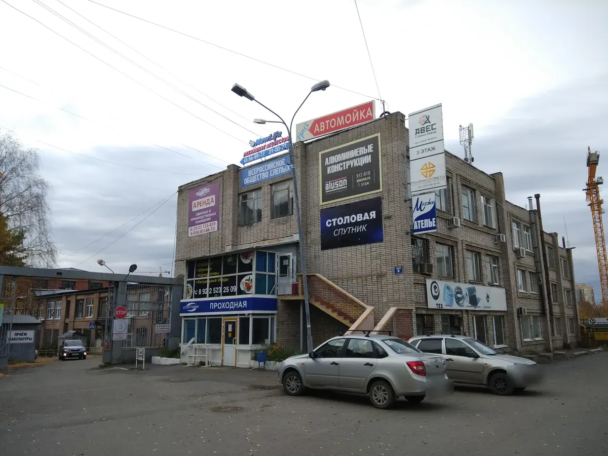

Ул. Карла Маркса, 437 · круглосуточно
Бриз автомойка самообслуживания в Ижевске
Тёплый ангар, 8 моечных постов и всё необходимое для ухода за автомобилем. Работаем круглосуточно.
- 24 часа, без выходных
- 8 постов под крышей
- Пена, эмульсия, воздух, пылесос

Что есть на посту
На каждом посту
- Пена или эмульсия – на выбор по сторонам ангара
- Вода с хорошим напором
- Воздух – продуть замки и уплотнители
- Тёплый бокс зимой
Отдельно, если нужно
- Пылесос
- Химчистка салона – отдельный тариф
- Защитный воск
Цены с карточки на Картах
Платите за время на посту: моете сами, сколько оплатили.
Самообслуживание
- Мойка самообслуживанияпост, пена или эмульсия, вода, воздухот 200 ₽ за 15 минут
- Химчистка салона самообслуживаниясвоими руками, оборудование на местеот 500 ₽ за 30 минут
- Нанесение защитного воска80 ₽
Мойка
- Мойка кузоваот 200 ₽
- Пылесосуточнить
Цены взяты с карточки «Бриза» на Яндекс.Картах. Перед приездом уточняйте актуальный тариф у администратора: напишите в Telegram или позвоните.
Как помыть машину
- 01
Заезжаете в ворота «Заезд здесь»
Ул. Карла Маркса, 437, круглосуточно.
- 02
Оплачиваете время у администратора
Картой, по QR-коду, через СБП.
- 03
Моете сами на свободном посту
Пена, вода, воздух – всё на месте.
- 04
Продули, протёрли – и поехали
Пылесос и воск можно взять дополнительно.



Почему сюда ездят годами
В тепле круглый год
Ангар под крышей – зимой моете без мороза.
8 постов
Даже когда бывает очередь, посты освобождаются быстро.
Работаем круглосуточно
Можно приехать ночью или рано утром, когда никого нет.
Отзывы с Яндекс.Карт
«Мою авто там постоянно, лет 12 уже сюда езжу. Спокойно в тепле помыл, продул, просушил и поехал. В целом всё устраивает»
Romario Chebanelli · 11 февраля
«Мне все понравилось. Хорошая мойка самообслуживания, влазит вроде 7 машин в ангар химия хорошая, даже не пришлось тереть а машина была после зимы, я был в шоке. 10/10»
AARomanov · 13 апреля
«Отличная мойка с недорогим ценником, понятными фиксированным прайс-листом. Иногда бывают очереди, но не критично, т.к. достаточно много боксов»
Игорь О. · 30 марта
Отзывы с карточки на Яндекс.Картах, без правок.
Частые вопросы
Сколько времени даётся на мойку?
Вы платите за время на посту. Точный тариф уточняйте у администратора – напишите в Telegram или позвоните.
Можно ли приехать ночью?
Да, мойка работает круглосуточно.
Есть ли пылесос и химчистка?
Да, пылесос и химчистка салона самообслуживания есть на месте, оплачиваются отдельно.
Как оплатить?
Картой, по QR-коду или через СБП.
Можно ли забронировать пост?
На сайте можно только спросить, будет ли свободный пост в нужное время. Ответит администратор в Telegram или по телефону.
Приезжайте помыть машину в тепле
Въезд через проходную на ул. Карла Маркса, 437 – на здании вывеска «Автомойка».
- Адрес
- Ижевск, ул. Карла Маркса, 437
- Часы
- Круглосуточно
- Телефон
- +7 (3412) 47-70-02
- Telegram
- @Briz_izh